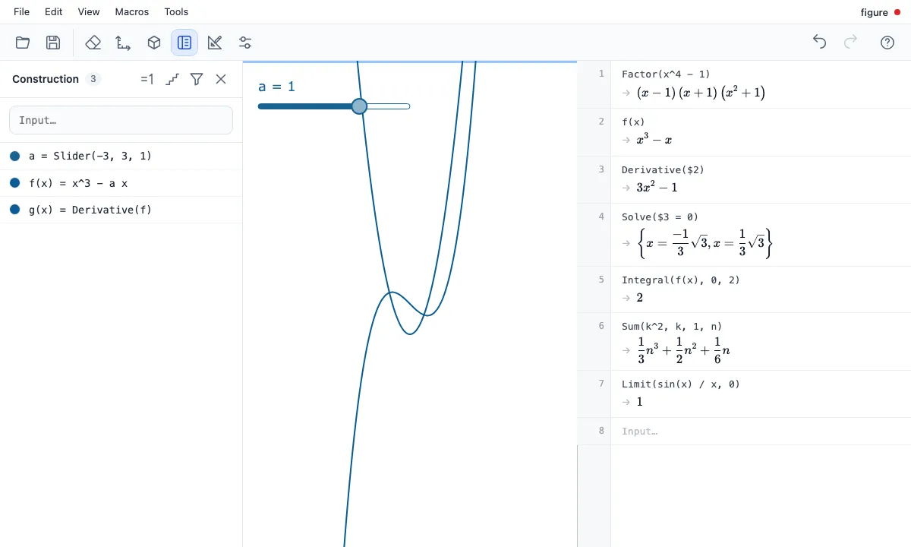

Computer algebra
DocGeo computes exact values with Giac, the computer algebra engine of Xcas and GeoGebra: derivatives, antiderivatives, factorizations, equations, limits, sums, in the figure’s formulas as in a computer algebra view. It also finds the equation of a locus and proves geometric properties.

Giac is loaded the first time a computation needs it, never for a figure that doesn’t. The last answers are saved in the figure: it opens and is displayed without waiting for Giac, even offline. If Giac can’t be loaded, “⚠ Giac” appears at the bottom left: the answers already known stay displayed, the others are undefined.
Computer algebra commands
They can be used in any formula, like a function. An expression whose formula is only one of these commands shows Giac’s answer rather than its formula.
| Command | Result |
|---|---|
Derivative(f),
Derivative(e, v),
Derivative(e, v, n)
|
derivative, n-th derivative with respect to v |
Integral(e),
Integral(e, v)
|
antiderivative |
Integral(x^2, 0, a),
Integral(e, v, a, b)
|
integral from a to b, exact value |
Factor(e) |
factorization over the rationals:
x^2 - 2 stays as it is
|
IFactor(e) |
factorization over the radicals: (x − √2)(x + √2) |
Expand(e), Simplify(e)
|
expanded form, simplified form |
Solve(x^2 = 2),
Solve(e, v)
|
sorted list of the real solutions of an equation, or of an expression equal to zero |
CSolve(e) |
complex solutions |
Sum(e, k, a, b) |
sum of the e for k integer from a to b |
Limit(e, a),
Limit(e, v, a)
|
limit at a, which may be ∞ |
TaylorPolynomial(e, a, n),
TaylorPolynomial(e, v, a, n)
|
Taylor polynomial of order n at a |
The variable v is x, y, z or t, by default the first one the
expression reads. A function of the figure is written by its
name: g(x) = Derivative(f).
-
A slider stays a symbol for Giac:
Factor(x^2 - a)shows x² − a even when a is 4. Moving the slider therefore asks nothing of Giac: the answer is only evaluated again, during the motion. -
Exceptions: the order n of a Taylor polynomial, and the
bounds of a sum with no simple form (
Sum(1/k, k, 1, n)), are read by their value: a slider gives one answer per integer value. -
Integral(f, a, b), f being the name of a function, remains the command that draws the area;Integral(x^2, 0, 1)orIntegral(e, v, a, b)computes the exact value. - Until the answer arrives, the object keeps its last value. An answer DocGeo can’t read makes the object undefined. A derivative is computed by DocGeo while waiting for Giac.
The CAS view
As in GeoGebra: numbered computation lines, beside the figure or in their own tab.
| Action | How |
|---|---|
| Add the view | File › View › New CAS view (one per figure), or File › New CAS tab (“CAS1”, “CAS2”…) |
| Compute a line | type in the last, empty line, then Enter: the answer is shown and a new line waits |
| Edit a line | click it, then Enter; Esc gives back the previous text, ↑ and ↓ go from one line to another |
| Delete a line | empty it, then Enter: the following numbers are shifted |
| Delete the view | File › View › Delete the CAS view |
Each change is undone with Undo. A line that isn’t understood is refused, in red.
Writing a line
-
A line is a formula, with or without a command:
sqrt(12) - sqrt(3)gives √3,Factor(x^4 - 1)its factorization. -
$2is the answer of line 2. When a line is deleted, the$nare renumbered, and a reference to the deleted line is replaced by its formula. -
b := 3andh(x) := x^2 + 1define a number or a function for the following lines. -
The figure’s objects are read by their current value: with a
= 2,
a^2gives 4. When they are moved, the lines that read them are computed again. A letter that is not an object is a free variable:b^2stays b². -
piandlnare written as in GeoGebra,∞alsoinf. Angles are always in radians, even in a figure in degrees. -
Numeric(e),Numeric(e, n)give an approximate value (to n digits);KeepInput(e)shows e as it is, without computing. A line in quotes,"Exact computation", is a plain text. -
?replaces an answer that Giac doesn’t give or that DocGeo can’t read.
Pointing with the mouse
While typing a line already begun, clicking an object of the
figure writes its name; clicking another line writes its
$n. On an empty line, the figure responds as usual.
Defining an object of the figure
A definition that reads only objects of the figure also creates
the object, with its line in the Construction:
m(x) := x^2 + a draws the function m. A definition
that reads a free variable, a $n or a name defined
only in the view (n := b^2) stays specific to the
view.
In the player, the lines are shown in the browser’s language.
Algebraic curves
An equation of any degree, or not polynomial, typed in the
Construction is a curve: f = x^3 + y^3 = 3x y (the
folium of Descartes), c = sin(x) = y. It is drawn
where it crosses the window and follows the window when it is
moved; points can be placed on it and it can be intersected with
other objects.
| Command | Result |
|---|---|
LocusEquation(M, P) |
the whole curve described by the point M when the point on object P runs along its object |
Envelope(d, P) |
the whole curve tangent to the positions of the line d when P runs along its object |
As in GeoGebra, it is the whole equation, all its branches, not
only the part run through: LocusEquation of a point
moving along a segment gives the line. While waiting for Giac,
or for a construction it doesn’t translate (macros, angle
bisectors, incircle, slider as driver, space), it is the locus
run through of Locus.
Proving
Six predicates, each argument being the name of an object, tell
whether a property holds on the figure as it is:
true or false.
| Predicate | True if |
|---|---|
AreCollinear(A, B, C) |
the three points are collinear |
AreParallel(d, e),
ArePerpendicular(d, e)
|
the lines, segments or rays are parallel, perpendicular |
AreConcyclic(A, B, C, D) |
the four points are on one circle (or one line) |
AreConcurrent(d, e, f) |
the three lines pass through one point (or are parallel) |
AreEqual(a, b) |
two points, lines or circles coincide; two segments have the same length; two numbers are equal |
Prove(p), p being one of these predicates, tells
whether it is true in general: for all positions of the
free points and of the points on objects, except degenerate
cases. With G = Centroid(A, B, C),
AreCollinear(A, B, G) becomes true when C is put on
(AB), but Prove(AreCollinear(A, B, G)) stays false.
Giac translates the construction into equations, as GeoGebra
does: the answer arrives within a few seconds at most, and it is
saved in the figure.
-
The computation covers all intersections at once: to speak
of the second intersection of a line and a circle through a
point A, construct it with
OtherIntersection(c, d, A). -
Provestays undefined for a construction it doesn’t translate (those of LocusEquation, or an angle, a ratio or a radius that is not a simple fraction, such as a 60° rotation), and in the CAS view. -
The arguments are names: construct and name the lines first,
Prove(AreParallel(d, e)).
GeoGebra figures
On import, the computer algebra commands of the formulas, the
lines of GeoGebra’s CAS view, those of its Calculator Suite,
LocusEquation, Envelope,
Prove and the predicates are carried over. A cell
that uses a command DocGeo doesn’t have is reported.